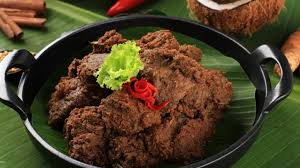
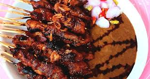
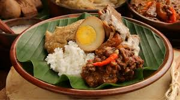
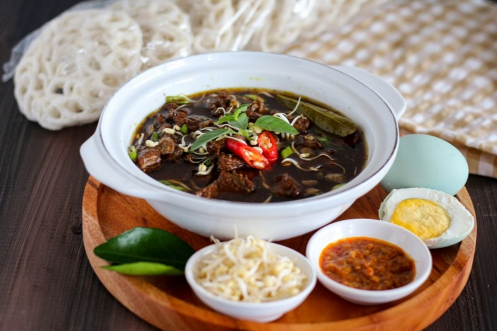
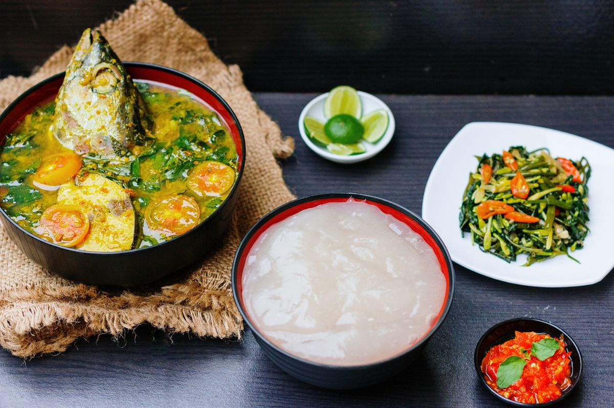
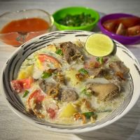

Rendang - Sumatera Barat
Masakan daging berbumbu khas Minangkabau yang mendunia karena rasa gurih dan rempahnya yang kaya.

Sate Madura - Jawa Timur
Daging tusuk bakar dengan bumbu kacang yang menggugah selera dan aroma khas arang bakar.

Gudeg - Yogyakarta
Olahan nangka muda manis gurih yang menjadi ikon kuliner khas Kota Pelajar.

Pempek - Palembang
Ikan giling dan sagu disajikan dengan kuah cuko asam manis pedas yang segar.

Rawon - Surabaya
Sup daging berkuah hitam dari kluwek yang memberi rasa unik dan aroma khas.

Papeda - Papua
Bubur sagu khas Papua yang disajikan dengan kuah ikan kuning nan segar.

Soto Betawi - Jakarta
Kuah santan gurih berpadu daging sapi dan aroma rempah yang menggoda selera.
Ikan Bakar - Sulawesi
Ikan segar dibakar dengan bumbu rica atau dabu-dabu khas yang pedas menyegarkan.